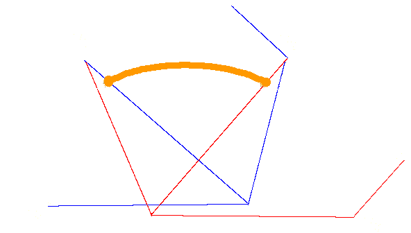

今回は B-Spline 曲線についてまとめたいと思います。 目的は NURBS (Non-Uniform Rational B-Spline) を解説することです。 今後（もうやっているところがあるかも）、モデリングは NURBS が用いられ、 LOD (Level of detail : 奥行きなどによって決まる詳細度)に応じてポリゴン分割して表示、 もしくはハードウェア的に曲面を描くようになるでしょうから、 これを勉強するのは有用なことに思われます。
まず、UBS (Uniform B-Spline) です。 前回、Bezier 曲線を、
x(t) = Σ3i=0 3Ci ti(1-t)3-i Pi,
の形に書きました。B-Spline 曲線は、この曲線と同様に、
x(t) = Σni=0 Ni,M (t) Pi,
によって、定義されます。但し、
t - ti ti+M - t
Ni,M(t) = ――――― Ni,M-1(t) + ―――――― Ni+1,M-1 (t),
ti+M-1 - ti ti+M - ti+1
Ni,1(t) = 1, (ti ≦ t < ti+1)
Ni,1(t) = 0, (それ以外)
で、再起的に定義されます。M は曲線の時間に関する次数＋１で、３次曲線の場合は M = 4 になります。
さて、ti を説明していませんでした。 ti はノットと呼ばれます。 n 個の制御点で決まる M 次の B-Spline 曲線に関して、 上の係数の最大と、最小の添え字を数えると、t0 から、tn+M-1 の n+M 個のノットが必要です。 これらの点をまとめた、
T = [t0 t1 t2 ･･･ tn+M-1],
を、ノットベクトルと呼びます。ノットは、有効な Ni,M(t) の範囲を決める点なので、 ti ≦ ti+1 でなければいけません。
実は今までのは、NUBS のお話です。UBS は N が取れます。 UBS は NUBS の具体例の一つで、ノットベクトルの増加率が Uniform (一様)になります。 ４つの制御点 (n = 4) 、で３次曲線 (M = 4) を表現する場合の、UBS のノットベクトルは、
T = [-3 -2 -1 0 1 2 3],
になります。 この場合の UBS 曲線を計算し、書き下すと、
1
x(t) = ― (1 - t)3 P0
6
1 2
+ (― t3 - t2 + ― ) P1
2 3
1 1 1 1
+ (- ― t3 + ― t2 + ― t + ― ) P2
2 2 2 6
1
+ ― t3 P3
6
になります。下にこの曲線を図示してみました。

UBS 曲線は、2つめの制御点と3つめの制御点の近くを通ります。 また、始点と終点の速度の関係が似たものになっています。 制御点を沢山用意した場合、３次の UBS 曲線に関して、 制御点を一つずつずらして繋げれば、滑らかな曲線を作ることができます。
UBS 曲線の終点の位置は、P1 には依存しません。 また、始点の位置も P2 によりません。 つまり、連結したUBS 曲線を考えた場合に、制御点を一点だけ動かしても、隣の制御点の近くの境界点（始点及び終点）は 変化しないので、形の制御がしやすのです。 これが、モデラーなどで、B-Spline 曲線がつかわれる理由だとおもいます。
きょうはここまで、
う～ん、B-Spline 曲線は、あまり思い入れがないので、話が進みません。
後々直していきたいと思います。